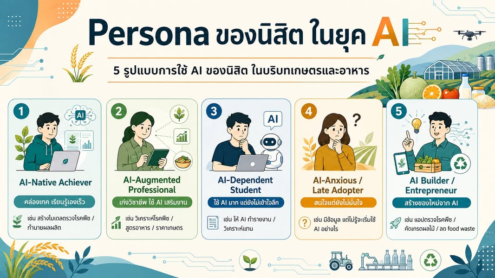

อย่าเริ่มแผนแม่บทด้วยคำว่า “ใช้ AI” ให้เริ่มจากคนที่เราอยากสร้าง
{kind=link}

เมื่อได้รับโจทย์ให้ช่วยคิดแผนแม่บทว่าองค์กรควร “ใช้ AI” อย่างไร ผมเห็นว่า AI เป็นสิ่งที่หลีกเลี่ยงได้ยาก แต่ถ้าเริ่มต้นด้วยชื่อเทคโนโลยี เราอาจปล่อยให้เครื่องมือเป็นผู้กำหนดทิศทางแทนองค์กร
โจทย์ที่เหมาะกว่าคือ เราจะออกแบบอนาคตอย่างไร ในเมื่อ AI จะยังอยู่กับเรา คำถามนี้ไม่ปฏิเสธ AI และไม่ยอมจำนนต่อ AI แต่ให้มนุษย์กลับมาเป็นผู้กำหนดภาพปลายทาง
แผนแม่บทต้องเริ่มจากภาพอนาคต ไม่ใช่รายการจัดซื้อ
การออกแบบอนาคตไม่ใช่เพียงนำปัจจุบันมาเพิ่มประสิทธิภาพทีละน้อย เราต้องมองให้เห็นก่อนว่าประสบการณ์ ระบบงาน หรือคนที่อยากให้เกิดขึ้นมีหน้าตาอย่างไร แล้วจึงย้อนกลับมาหาว่าต้องเปลี่ยนอะไรและเทคโนโลยีควรรับบทบาทใด
หากข้ามภาพปลายทาง เราอาจได้โครงการจำนวนมาก—สิทธิใช้ AI, supercomputer, data center, วิชาบังคับ, การอบรมอาจารย์ หรือโครงการ reskill/upskill—แต่ไม่รู้ว่าเมื่อนำมารวมกันแล้วกำลังพาองค์กรไปที่ใด สิ่งเหล่านี้อาจจำเป็น แต่ไม่ใช่วิสัยทัศน์ในตัวเอง
Persona เป็นตุ๊กตาสำหรับคิด ไม่ใช่ป้ายติดตัวนิสิต
เมื่อต้องออกแบบการพัฒนาคน เราสามารถใช้ Persona เพื่อทำให้ภาพผู้เรียนที่มีความต้องการ โอกาส และความเสี่ยงต่างกันมองเห็นได้ชัดขึ้น Persona ไม่ได้มีไว้ตัดสินว่าคนหนึ่งเป็นประเภทใดตลอดไป แต่ช่วยให้เราถามว่าองค์กรควรสร้างเส้นทางสนับสนุนแบบใด
1. AI-Native Achiever
ผู้เรียนที่คล่องเทคโนโลยี เรียนรู้เองเร็ว และใช้ AI สร้างความสามารถใหม่ เช่น โมเดลตรวจโรคพืชหรือระบบทำนายผลผลิต สิ่งที่เขาต้องการอาจไม่ใช่วิชาแนะนำ AI เพิ่ม แต่เป็นโจทย์ยาก ข้อมูลจริง ที่ปรึกษา และพื้นที่ให้ทดลองเกินขอบหลักสูตร
2. AI-Augmented Professional
ผู้เรียนหรือผู้เชี่ยวชาญที่มีฐานวิชาชีพแข็งแรง และใช้ AI ขยายความสามารถ เช่น วิเคราะห์โรคพืช สูตรอาหาร หรือข้อมูลราคาเกษตร กลุ่มนี้ชี้ให้เห็นว่าเป้าหมายไม่จำเป็นต้องทำให้ทุกคนเป็นนักพัฒนาโมเดล แต่ต้องทำให้ใช้ AI บนฐานความรู้เฉพาะทางได้อย่างรับผิดชอบ
3. AI-Dependent Student
ผู้เรียนที่ใช้ AI มาก แต่ความเข้าใจของตนเองไม่เติบโตตาม เขาอาจส่งรายงานหรือวิเคราะห์ข้อมูลได้โดยอธิบายไม่ได้ว่าคำตอบถูกหรือผิดเพราะอะไร ความเสี่ยงนี้ต้องแก้ผ่านรูปแบบการเรียนและการประเมินที่ยังเห็นกระบวนการคิด การตรวจสอบ และความสามารถที่คงอยู่เมื่อไม่มี AI
4. AI-Anxious / Late Adopter
คนที่มีความรู้ มีข้อมูล และมีโจทย์จริง แต่ยังไม่มั่นใจว่าจะเริ่มต้นใช้ AI อย่างไร หรือเข้าใจว่า AI เป็นเรื่องของคนสายคอมพิวเตอร์เท่านั้น คนกลุ่มนี้ต้องการจุดเริ่มต้นที่ปลอดภัย ตัวอย่างจากวิชาชีพของตน และเพื่อนร่วมทาง มากกว่าคำสั่งให้ปรับตัว
5. AI Builder / Entrepreneur
คนที่ไม่ได้ใช้ AI เพียงทำงานเดิมให้เร็วขึ้น แต่ใช้สร้างสิ่งใหม่ เช่น แอปตรวจโรคพืช ระบบคัดเกรดผลไม้ หรือระบบลด food waste การสนับสนุนเขาต้องเชื่อมความรู้ทางเทคนิค ความเข้าใจผู้ใช้ การทดลองภาคสนาม ทรัพย์สินทางปัญญา เงินทุน และเครือข่ายผู้ใช้จริงเข้าด้วยกัน
6. The Disillusioned High-Potential Student
Persona ที่ผมกังวลที่สุดคือเด็กเก่งซึ่งเริ่มถามว่า “ถ้าผมเรียนเองกับ AI ได้เร็วกว่านั่งเรียน แล้วผมมามหาวิทยาลัยทำไม?” เขาเรียนจากแหล่งออนไลน์ เข้าถึงเครื่องมือระดับโลก สร้างโครงการและ portfolio เอง และหา community ได้โดยไม่ต้องรอมหาวิทยาลัย
สิ่งที่เขาต้องการจึงอาจไม่ใช่ content เพิ่ม แต่เป็นสายธารของคุณค่าที่หาเองได้ยาก:
คนเก่ง → โจทย์จริง → ห้องทดลอง → network → credential → opportunity
ถ้ามหาวิทยาลัยมอบสิ่งเหล่านี้ไม่ได้ ผู้เรียนศักยภาพสูงอาจไม่ได้ออกจากมหาวิทยาลัยทันที แต่จะค่อย ๆ ถอนตัวทางความคิด เรียนเพื่อผ่านระบบ ขณะที่การเติบโตจริงเกิดขึ้นที่อื่น
คำถามชี้ขาดคือ AI ขยายหรือหยุดศักยภาพของคน
การแบ่งว่าใครใช้หรือไม่ใช้ AI อาจไม่ใช่เส้นแบ่งที่สำคัญที่สุด สิ่งที่ควรถามคือ AI ทำให้เขาเข้าใจลึกขึ้น สร้างสิ่งที่ยากขึ้น และรับผิดชอบต่อผลงานได้มากขึ้น หรือทำให้เขาหยุดพัฒนาความสามารถของตนเอง
เมื่อความรู้และคำอธิบายมีราคาถูกลงอย่างมาก มหาวิทยาลัยต้องตอบให้ได้ว่าตนสร้างคุณค่าอะไรที่นิสิตหาเองจาก AI ไม่ได้ คำตอบนี้ควรเป็นแกนที่เชื่อมหลักสูตร คน ทรัพยากร โครงสร้างพื้นฐาน และโครงการต่าง ๆ เข้าด้วยกัน
จาก Persona สู่แผนที่ตัดสินใจได้
เมื่อเห็นผู้เรียนหลายแบบ องค์กรจึงค่อยกำหนดว่าอยากเพิ่มคนลักษณะใด ลดความเสี่ยงใด และช่วยให้คนเคลื่อนจากสถานะหนึ่งไปสู่อีกสถานะหนึ่งอย่างไร จากนั้นจึงออกแบบสภาพแวดล้อม หลักสูตร ทรัพยากร โอกาส และตัวชี้วัดให้สอดคล้องกับเป้าหมาย
แผนแม่บทที่ดีจึงไม่ใช่รายการสิ่งที่องค์กรจะทำเกี่ยวกับ AI แต่เป็นคำอธิบายที่ชัดว่าองค์กรต้องการสร้างคนและอนาคตแบบใด เหตุใดจึงเลือกทำบางอย่าง และแต่ละการลงทุนช่วยพาไปถึงภาพนั้นอย่างไร